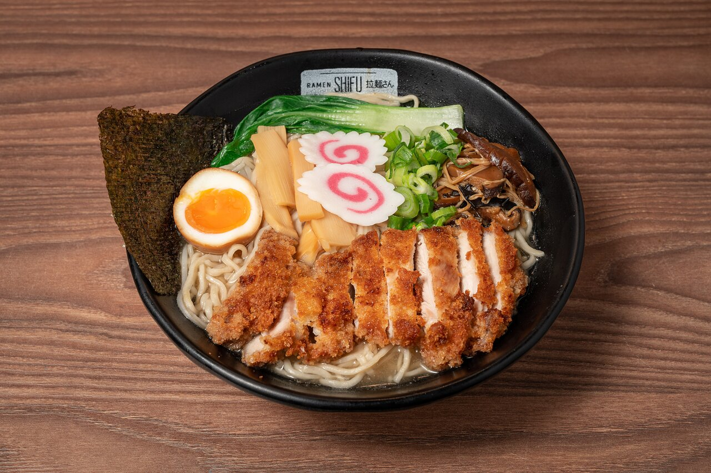

Ramen

Description
Ramen is a Japanese noodle soup consisting of Chinese-style wheat noodles served in a rich broth, often flavored with soy sauce or miso, and topped with ingredients such as sliced pork, nori (dried seaweed), menma (bamboo shoots), and scallions. It's a comforting and flavorful dish that's loved worldwide.
Ingredients
- 4 cups chicken or vegetable broth
- 2 cups water
- 1 tablespoon soy sauce
- 1 tablespoon miso paste (optional)
- 2 packs of ramen noodles (or fresh ramen noodles)
- 2 large eggs
- 1/2 cup sliced pork or chicken (cooked)
- 1/2 cup sliced mushrooms
- 1/4 cup sliced green onions
- 1 sheet nori (seaweed), cut into strips
- 1/4 cup corn kernels (optional)
- 1 teaspoon sesame oil
- Salt and pepper to taste
Steps
- Prepare the Broth: In a large pot, bring the chicken or vegetable broth and water to a boil. Stir in the soy sauce and miso paste (if using) until dissolved. Reduce the heat to low and let simmer while you prepare the other ingredients.
- Cook the Eggs: In a separate pot, bring water to a boil. Gently lower the eggs into the water and cook for 6-7 minutes for soft-boiled eggs. Remove the eggs, cool them under cold running water, and peel them. Set aside.
- Cook the Noodles: Cook the ramen noodles according to the package instructions. Drain and divide the noodles into serving bowls.
- Assemble the Ramen: Ladle the hot broth over the noodles in each bowl. Top with sliced pork or chicken, mushrooms, green onions, nori strips, corn (if using), and a drizzle of sesame oil. Halve the soft-boiled eggs and place one half in each bowl.
- Serve: Serve the ramen hot, garnished with additional toppings as desired. Enjoy!